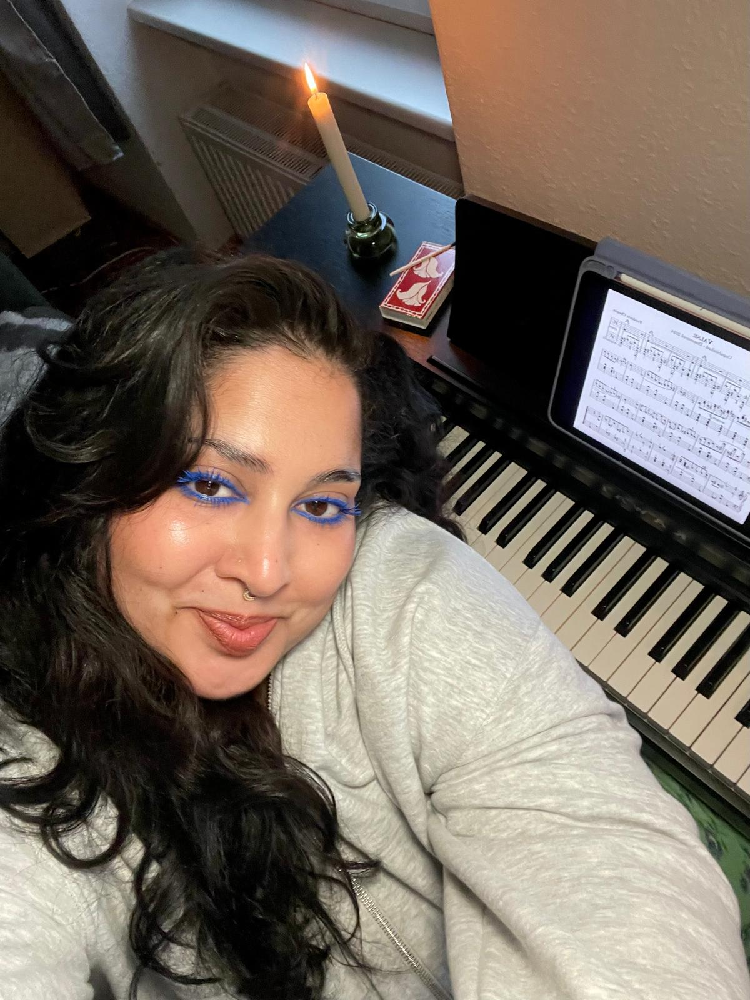

Work with me 

Pari (Bad Soden am Taunus, 1993*) is a cultural worker, writer, musician, and singer based in Berlin with over a decade of experience in project management and arts facilitation. She holds a Bachelor of Music with a specialization in pedagogy from McMaster University (Hamilton, Canada, 2015) and a Graduate Certificate in Arts and Cultural Management from Humber College (Toronto, Canada, 2018).
Drawing from her diverse background, Pari designs and leads community-focused programs that harness the transformative power of the arts. She has a knack for making complex information accessible and engaging, and is recognized for her exceptional writing skills, collaborative spirit, and ability to design meaningful, community-focused programs.
As an Afghan born in Germany and raised in Canada, she brings a cross-cultural perspective (and the occasional "eh?") to her work, all while drawing strength and inspiration from the transformative power of words, melodies, and shared creative experiences.
Led a team of 8 coordinators for the execution of 600 nationwide career workshops reaching over 17,000 youth across Canada.
Target audience: Marginalized groups, BIPOC and LGBTQ+. Managed all aspects of workshop planning, including booking industry
guests, communicating with educators, maintaining schedules/calendars, and follow-up, and occasional facilitation.
Project lead for serving and supporting LGBTQIA+ migrants and refugees, creative workshops and weekly events, reaching 500
participants; oversaw program design, facilitation, and outreach.
Managed artist affairs at the Afghanistan Festival, involving communication with guests regarding the schedule and points of
contact for inquiries, artist assistance, as well as translation tasks in German-Farsi-English.
Assisted the curator in organizing events, from contacting artists and volunteers to handling marketing and PR, as well as tracking
data and monitoring budgets. Also wrote a series of engaging and informative posts about hidden music gems from Germany on
the Goethe-Institut's Custom Cultures Blog.
Moderated a panel and facilitated discussions on Afghan music history, production, and preservation.
Collaborated with academics, DJs, and cultural practitioners to make musical heritage accessible to the
public.
As part of BIWOC Rising's 3 C Cohort in fall of 2025, I created and led an interactive workshop exploring voice,
movement, and rhythm in a supportive, playful space. Creating an environment for authentic self-expression,
creativity, and connection, enabling participants to integrate personal discoveries through embodied artistic
practice.
Wrote a series of three blogs highlighting overlooked German composers, uncovering hidden gems in
German music history. (Website was taken down October 2025, but 3 pieces are available here as
PDF: on Felix Draeseke, Rudi Stephan, and Julius Reubke.
Contributed a piece titled "Hairy Fairy" to a collaborative community publication about the horrors
and healing of our relationship with hair. The publication is available to purchase with a minimum 5€
donation.
Musings, ............
BIWOC Rising 3 C's Cohort (registration required through BIWOC Rising)